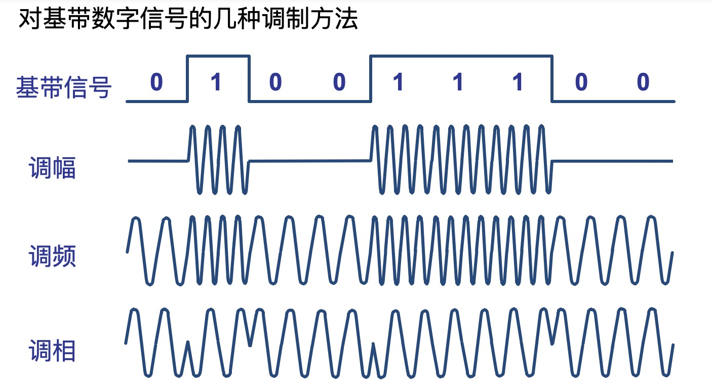

基本概念
物理层解决如何在链接各种计算机的传输媒体上传输数据比特流，而不是只具体的传输媒体。
特性
物理层的主要任务描述为确定与传输媒体的接口有关的一些特性：
- 机械特性 例接口形状、大小、引线数目、固定和锁定装置等。
- 电气特性 规定的电压范围
- 功能特性 知名某条线上出现的某一点评的电压意义 例规定-5V表示0，+5V表示1
- 过程特性 也称规程特性，规定建立连接时各个相关部件的工作步骤
数据通信的基础知识
数据通信系统的模型：
一个数据通信系统可以大致划分为三大部分：源系统、传输系统、目的系统。
源系统一般包括两部分：
源点（就是产生要传输的数据）
发送器 生成的数比特流通过发送器编码才能在传输系统中传输
目的系统也氛围两部分
接收器 接受传输过来的信号， 转换成目标设备能处理的信息
终点 接受设备接受获取传送来的数字比特流
相关术语
通信的目的就是传输消息
数据(data) – 传送消息的实体 （RFC 4949）数据是使用特定方式表示的信息，通常就是有意义的符号序列。
信号(signal) – 数据的电气的或电磁的表现
根据信号中代表消息的参数的取值方式不同，分成两类：
模拟信号，或连续信号 --- 代表消息的参数的取值是连续的(调制解调器-> 电话端之间的信号)。
数字信号，或离散信号 --- 代表消息的参数的取值是离散的。码元(code) – 在使用时间域的波形表示数字信号是，则代表不同离散数值的基本波形就成了码元。
信道(channel)的基本概念
信道用来表示向某一个方向传送信息的媒体。
从通信的双方信息交互方式可分为三种基本方式：
- 单向通信(当那个通信) 只能通过一个方向发送信息(例广播、电视信号)。
- 双向交替通信(半双工通信) 通信双方都可以发送信息，但不能同时发送信息，也不能同时接受信息。
- 双向同向通信(全双工通信) 可以同时发送和接受消息。
基带(base band)和带通(band pass)
基带信号(基本频带信号) – 来自信源的信号。像计算机输出的代表各种文字或图像文件的数据信号都属于基带信号。基带信号就是发出的直接表达了要传输的信息的信号，比如我们说话的声波就是基带信号。
带通信号 – 把基带信号经过载波调制后，把信号的频率返回搬移到较高的频段以便在信道中传输。
因此在传输距离较近时，计算机网络都采用基带传输方式，由于在近距离范围内基带信号的衰减不大，从而信号内容不会发生变化。因此在传输距离较近时，计算机网络都采用基带传输方式。比如计算机到监视器、打印机等外设信号就是基带传输。
调制方法
调幅（AM） 载波的振幅随着基带数字信号而变化
调频（FM) 载波的频率随着基带数字信号而变化
调相（PM) 载波的初始相位随基带信号而变化

等。
知识总结
物理层主要任务就是确定与传输媒体的接口有关的一些特性，如机械特性、电气特性、功能特性和过程特性。
一个数据通信通信分为三大部分：源系统、传输系统、目的系统。
通信的目的是传送信息。数据是运送消息的实体。信号则是数据的电气或电磁的表现。
根据信号中代表消息的参数的取值方式不同，信号可以分为模拟信号(连续信号)和数字信号(离散信号)。代表数字信号不同离散数值的基本波形成为码元。
根据双反个信息交换的方式，通信可以分为单向通信(单工通信)，双向交替通信(半双工通信)，双向同时通信（全双工通信）。
来自信源的信号叫做基带信号，信号主要在信道上传输就要经过调制。调制有基带调制和带通调制之分。最基本的带通调制方法有调幅、调频、调相。还有更重要的调制方法，比如正交振幅调制。
要提高数据在信道上的传输速率，可以使用更好的传输媒体，或使用先进的调制技术。但数据传输速率不可能任意地提高。